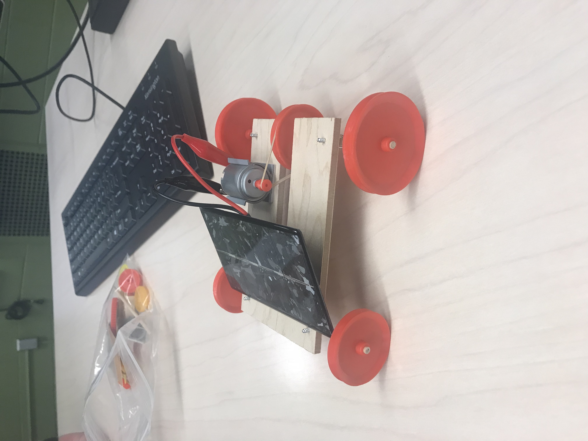

Solar Car Prototype
Zhang
This was an assignment for my introductory engineering school class. I built this solar powered prototype with my group members. It was really easy, considering it was the first assignment in the class. And the parts of this prototype were easy to figure out the function of. All we had to do was to assemble it.
The solar panel provides electricity to the engine through wires. The engine drives the wheels through a rubber band. Technically speaking, this is a rear-wheel drive vehicle. This is not a perfect solar-powered prototype vehicle. It's still just a prototype. There are many shortcomings that need to be improved. It needs to be iterated afterwards
After this, we also assembled a more advanced car. Through a camera, our car can follow the lines of the ground. It can move at the speed we set. It can even make turns.
Although the first car had many drawbacks. It couldn't turn and it couldn't change its speed. It can't even switch on and off. But I still have fond memories of it. I think it was this little car that got me interested in the engineering field and made me hope to pursue a career in the future.